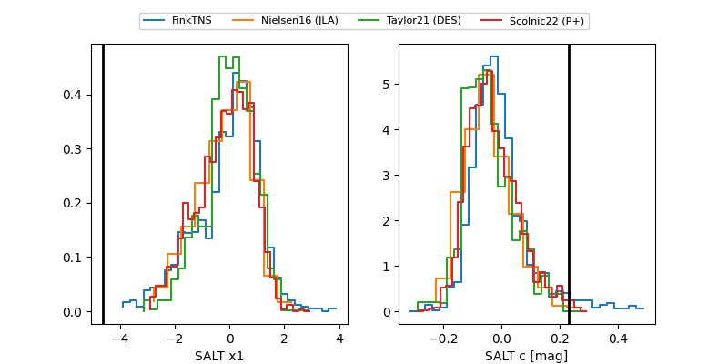

FINK: ZTF25abppcnx
Lasair: ZTF25abppcnx
ALeRCE: ZTF25abppcnx
TNS: 2025xjp
YSE: 2025xjp
ZTF25abppcnx (ztf,fink)
2025xjp (tns,yse)
equatorial (ra, dec) = (240.3221,+8.30476)
galactic (l, b) = (19.3240,+41.39509)

last atlasc=18.93, ztfg=19.01, ztfr=18.81
2 atlasc, 1 ztfg, 2 ztfr detections